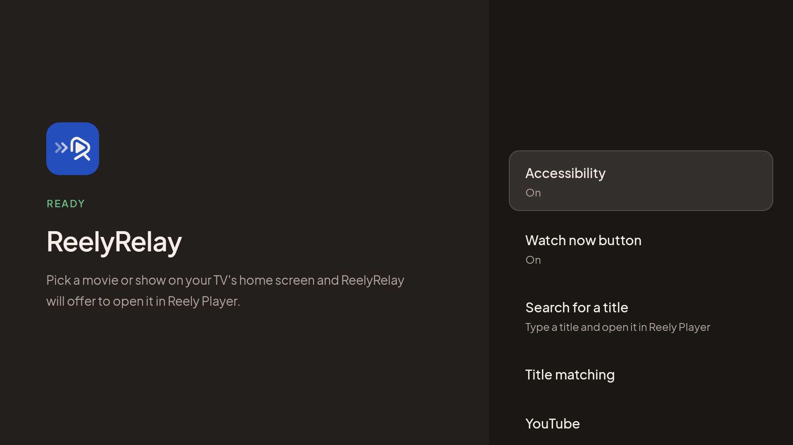
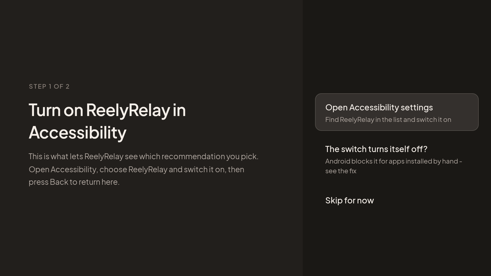

Your TV recommends.
Reely Player plays.
Pick a movie or show on your Google TV or Fire TV home screen, and ReelyRelay opens it in Reely Player instead of the app it came from - after one press to confirm.
Free. No account. Needs Reely Player on the same TV.

How it works
One narrow job
ReelyRelay watches your TV's home screen for one thing: you selecting a movie or show recommendation. Apps, menus and everything else are left alone.
- You pick a recommendationOn the home screen, like you always do.
- ReelyRelay identifies itIt reads the title of that one card and looks it up on TMDB.
- You confirm, Reely Player opensA "Watch now in Reely Player" button appears. Press it and you land on that title.
What it reads. Only the title of the recommendation you select, sent to TMDB to identify it. Nothing else is read, stored or sent. ReelyRelay hosts and provides no content itself.
Install
Put the APK on your TV
ReelyRelay isn't on an app store, so it is installed by hand. Pick whichever way you already know.
From your phone
- On the TV, install Send Files to TV and open it.
- On your phone, download the APK from the latest release and send it to the TV with the same app.
- Open the file on the TV and allow the install when Android asks.
With the Downloader app
Install Downloader (by AFTVnews) on the TV and enter this address:
github.com/Romaixn/ReelyRelay/releases/latest/download/ReelyRelay.apkOver ADB
This also turns Accessibility on, so you can skip that step in the app.
adb connect <tv-ip>:5555
adb install ReelyRelay.apk
adb shell appops set com.reely.relay ACCESS_RESTRICTED_SETTINGS allow
adb shell settings put secure enabled_accessibility_services com.reely.relay/com.reely.relay.RelayAccessibilityService
adb shell settings put secure accessibility_enabled 1The fourth line replaces the list of enabled accessibility services. If you already use another one, such as TalkBack, keep it in the list and separate the two with a colon.
Set up
Two steps, then you're done
Open ReelyRelay on the TV. It walks you through both, and moves on by itself as soon as each one is granted.
- Accessibility - what lets ReelyRelay see which recommendation you pick. Without it, nothing happens.
- The Watch now button - optional, recommended. It needs "Display over other apps". Without it, titles open in Reely Player straight away, with no confirmation.
On a Fire TV, step one is Fire TV mode instead.

Help
Accessibility won't stay on
You switch ReelyRelay on in Accessibility and the switch turns itself straight back off. That is Android 13 and later protecting you from apps that weren't installed from a store - a safeguard, not a bug. There are two ways past it.
1. Allow restricted setting
In ReelyRelay, open Accessibility, then The switch turns itself off?, then Open app info. Look for Allow restricted setting, often behind a three-dot menu. Turn it on, go back, and switch Accessibility on again.
Many TVs don't have this option at all. If yours doesn't, use ADB.
2. One ADB command
From a computer on the same network as the TV:
adb connect <tv-ip>:5555
adb shell appops set com.reely.relay ACCESS_RESTRICTED_SETTINGS allowThen switch Accessibility on again in the app. No computer at hand? atvTools runs the same line from your phone - type it without the leading adb shell.
To use ADB at all, turn on developer options on the TV: Settings, System, About, then press Android TV OS build seven times. Then enable USB or network debugging under Developer options.
Updating ReelyRelay from inside the app puts the block back. Run the command again afterwards, or update over ADB to avoid it.
Fire TV
Fire TV mode
Fire TV's home screen doesn't tell apps which recommendation you picked, so ReelyRelay reads the title off the screen instead, on the device. It needs two permissions:
- Usage access, to notice that you opened a recommendation.
- Screen recording, to read the title. Android shows its recording indicator while Fire TV mode is on.
Many Fire TV Stick 4K devices on Fire OS 8 have no Usage access screen. Grant it over ADB instead:
adb shell appops set com.reely.relay GET_USAGE_STATS allowScreen-recording permission is cleared by a restart, so turn Fire TV mode on again after one.
Troubleshooting
When nothing opens
Check that Reely Player itself takes the link. This should land on Iron Man, with ReelyRelay out of the picture:
adb shell am start -a android.intent.action.VIEW -d "reely://detail/movie/1726" com.reely.reelyCheck that the click is seen. Pick a recommendation with this running and look for a "Click event" line:
adb logcat -s ReelyRelay:D TitleHandler:D WatchNowOverlay:D PlayerLauncher:DSome cards, and voice search results, don't expose a title at all. For those, use Search for a title in the app, or turn on Title matching, then Read titles from the screen.